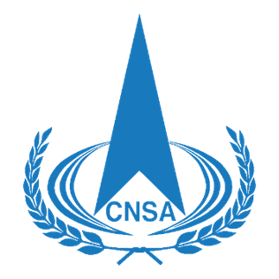
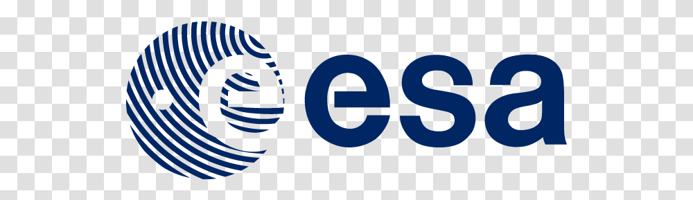
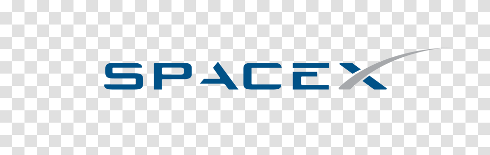
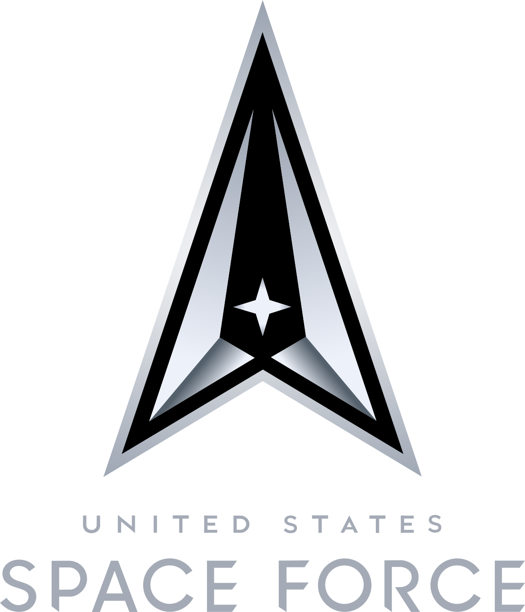
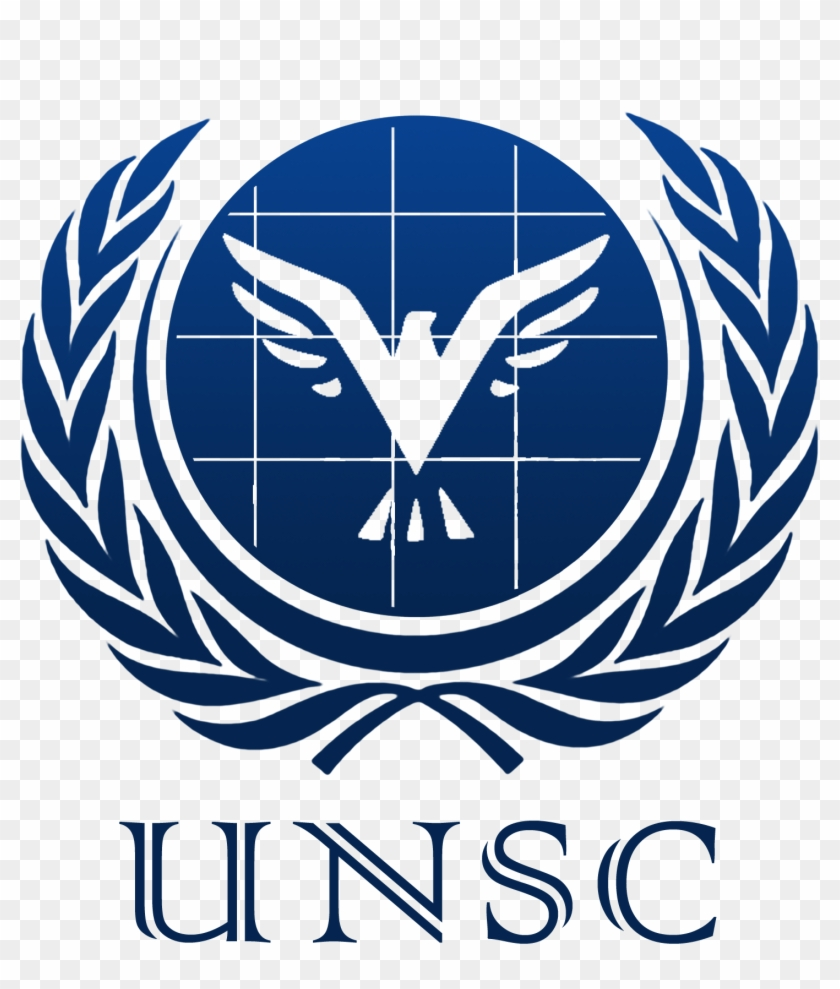
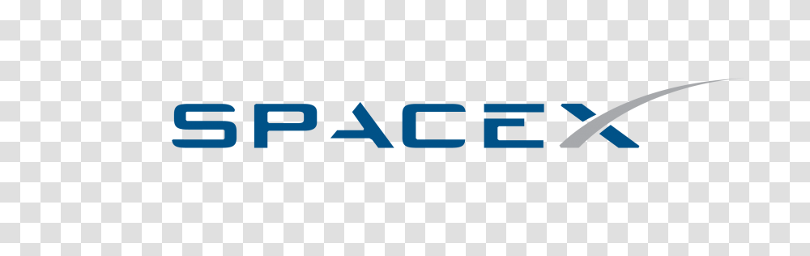
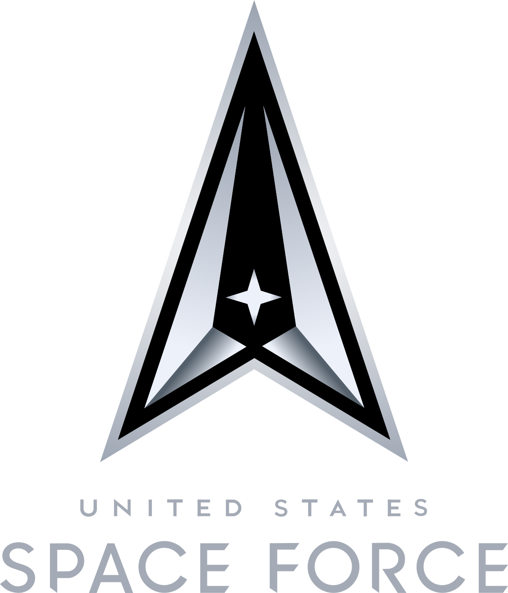
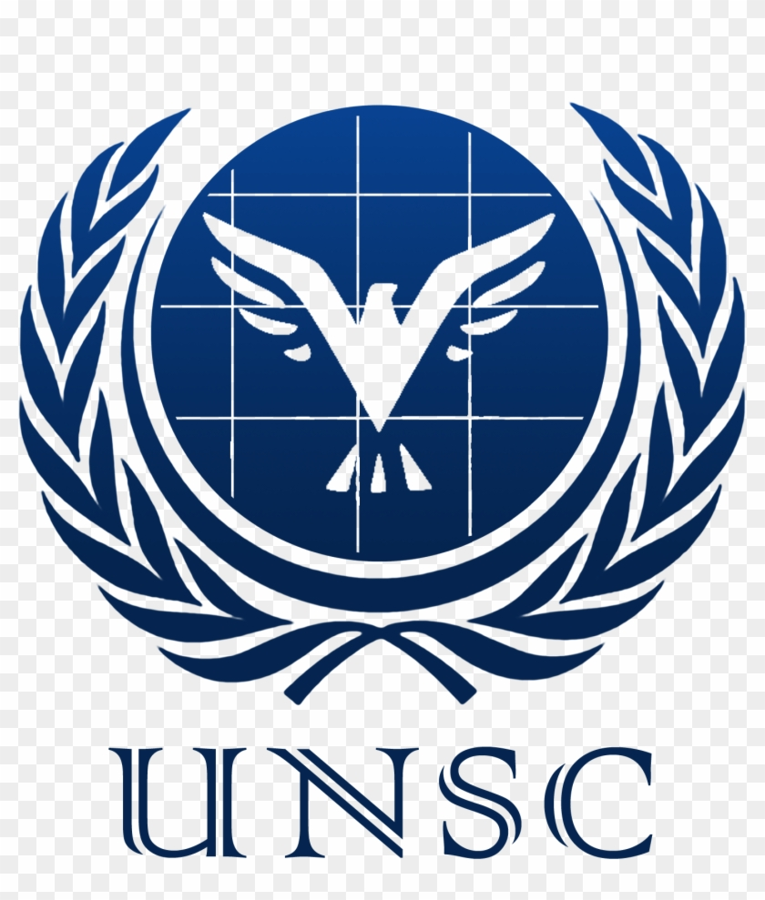

Organizers


 







Our first contact with outer world civilizations! Thanks to our partner agencies around the globe, we are able to make the first-ever extraterrestrial conference. They say they are coming in peace. They assure us they want to help us become a better civilization. Will they teach us new technologies? Will we be able to communicate with them through our expert interpreters? Are you ready? Sign up and hold on tight!
Please contact us per Email for any further questions about our First Interplanetary Arrival Conference 2022!
fiacs2022@globalsecurity.org
When SETI Contacted NASA and Everything Began
United Nations Security Council Planning with Intergallactic Beings